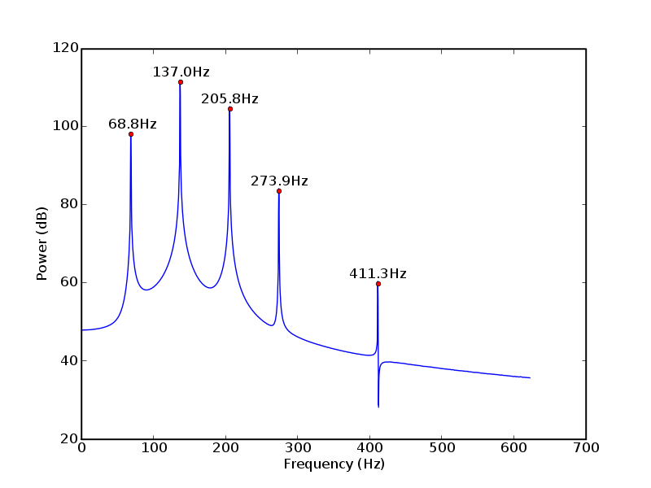
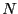
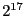

One test of this method involved recordings of five Cs of the 8-foot principal rank (C1 to C5). The lowest recording, which has a base frequency of 137.16Hz, was used as a reference for comparison (Figures 1-2). Using the above method a wave was synthesized (Figure 3). The resulting PSD from the synthesized wave (Figure 4) shows peaks with similar frequencies and amplitudes to the reference. Clearly all of the other features of the wave (non-smoothness between peaks of Figure 2) are lost and not generated in this synthesized wave.
|

|
Listening test results are acceptable. The produced sound is clearly of correct pitch and timbre. It is also, however, clearly computer generated. This is expected because, as noted above, all features outside of the generated peaks are lost. Furthermore, when going beyond the range of the lowest and highest recorded sounds, the generated sounds can get wildly inaccurate, with the percentage contribution multipliers quickly blowing up, yielding meaningless results. Thus, generated sounds should be confined to the interval between the lowest and highest recorded notes, or within a small margin thereof.
As a result of using the closest recorded note to the desired frequency as the basis for the harmonic structure, there are very noticeable changes when listening to a full range sweep of produced noises (i.e., a generated tone corresponding to each note on an organ). This occurs when the closest recorded note switches to another recorded note. The change in harmonic structure is noticeable since it is so abrupt and unnatural.
Regarding a computer back end, this method meets the requirements of real time speed. Generating sinusoids at a certain sampling frequency (e.g., 48kHz) for  peaks (e.g., 50) is about 2.4 million samples per second. Each sample requires a sinusoid operation, two multiplication operations, and some trivial operations that have no significant performance effect. Modern computers run in the range of billions of operations per second, or about two to four orders of magnitude faster than required to process real-time requests of a naive implementation. There is thus computational availability for multiple notes. With optimized, cached, or preprocessed data, this availability can increase further. For example, ChucK can easily mix 100 sinusoids at 44.1kHz on the author's computer, which has a clock rate of 2.0 GHz.
Processing speed of this algorithm is on the order of one second per recording. The author's implementation in Python is slowest at searching for peaks after a PSD has been performed. The PSD function, which involves many Fast Fourier Transforms (FFT), is not computationally expensive. In order to increase frequency precision, the number of FFT points is high (), which is larger than the number of samples in most recordings under 2 seconds, and thus only one FFT is computed per recording. However, computation time is not a critical issue because it need only be done once and can be done when time constraints are lenient.